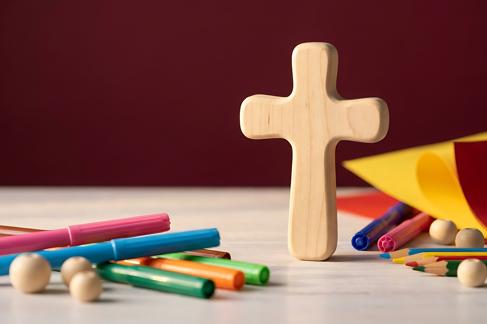

Welcome to the Family Ministry!
GVBC Family Ministry seeks to support parents in their call to nurture their children spiritually and raise them to know and love God.
It is our aim to help you find community, nourishment and rest through parent workshops, community groups, and family events working together with our kids and youth ministries.
